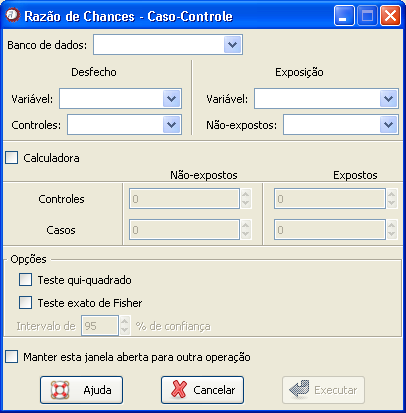

Razão
de chances - Estudos Caso-controle
Razão
de chances - Estudos Caso-controle

Figura 1. Janela "Razão de chances".
Figura 1. Janela "Razão de chances".
Essa
janela permite estimar razões de chances de duas formas: utilizando
variáveis de um banco de dados, ou digitando uma tabela.
Para calcular razões de chances com base em variáveis de um banco de dados, siga os seguintes passos:
Para calcular razões de chances digitando as informações, marque a opção "Calculadora". Com isso, os campos acima ficarão desabilitados, e os campos referentes a tabela serão habilitadas. Entre com os dados desejados em cada casela, atentando para sua legenda (casos, controles, expostos e não-expostos). A digitação incorreta dos dados poderá resultar em estimativas incorretas para a medida.
Outras opções podem ser calculadas nessa janela, além da razão de chances. Para solicitar um teste qui-quadrado ou o teste exato de Fisher, basta selecionar as caixas correspondentes nas Opções.
Quando todas as opções tiverem sido preenchidas, clique em "Executar". Para realizar sucessivas análises usando essa janela, marque a opção "Manter essa janela aberta para outra operação". Com isso, o resultado desejado aparecerá no campo "Saída de resultados" da janela principal do Epi-R, mas essa janela não será fechada, evitando o retrabalho de acessá-la.
Para calcular razões de chances com base em variáveis de um banco de dados, siga os seguintes passos:
1. Selecione
o banco de dados no campo "Banco de dados". Para isso, é
necessário que o banco já tenha sido aberto (detalhes
sobre como abrir abrir dados
ou importar dados via ODBC).
2. Selecione a variável que se refere ao desfecho, no campo "Variável" correspondente. Ao selecionar essa variável, seus valores ficarão disponíveis no campo "Controle" para que escolha qual categoria (ou valor) se refere aos controles.
3. O mesmo deve ser repetido para os campos referentes à "Exposição". Selecione a variável e em seguida, determine a categoria referente aos não-expostos.
Note que, a medida que os passos 2 e 3 forem feitos, embora a tabela da "Calculadora" não seja habilitada, será possível visualizar a tabela com os dados das variáveis.
2. Selecione a variável que se refere ao desfecho, no campo "Variável" correspondente. Ao selecionar essa variável, seus valores ficarão disponíveis no campo "Controle" para que escolha qual categoria (ou valor) se refere aos controles.
3. O mesmo deve ser repetido para os campos referentes à "Exposição". Selecione a variável e em seguida, determine a categoria referente aos não-expostos.
Note que, a medida que os passos 2 e 3 forem feitos, embora a tabela da "Calculadora" não seja habilitada, será possível visualizar a tabela com os dados das variáveis.
Para calcular razões de chances digitando as informações, marque a opção "Calculadora". Com isso, os campos acima ficarão desabilitados, e os campos referentes a tabela serão habilitadas. Entre com os dados desejados em cada casela, atentando para sua legenda (casos, controles, expostos e não-expostos). A digitação incorreta dos dados poderá resultar em estimativas incorretas para a medida.
Outras opções podem ser calculadas nessa janela, além da razão de chances. Para solicitar um teste qui-quadrado ou o teste exato de Fisher, basta selecionar as caixas correspondentes nas Opções.
Quando todas as opções tiverem sido preenchidas, clique em "Executar". Para realizar sucessivas análises usando essa janela, marque a opção "Manter essa janela aberta para outra operação". Com isso, o resultado desejado aparecerá no campo "Saída de resultados" da janela principal do Epi-R, mas essa janela não será fechada, evitando o retrabalho de acessá-la.